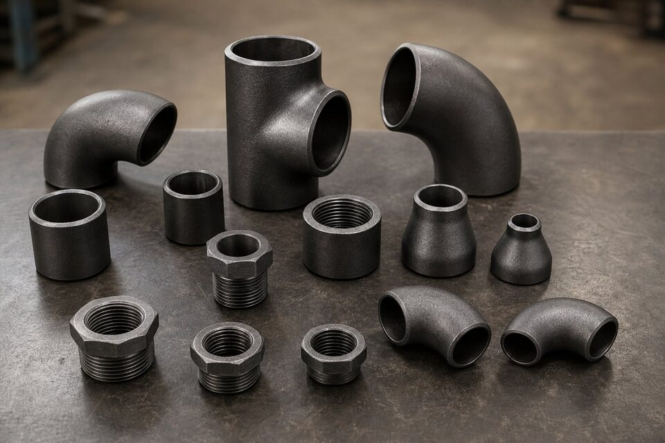

خانوادههای اصلی اتصالات
| خانواده | روش اتصال | کاربرد رایج |
|---|---|---|
| جوشی لببهلب | جوشکاری محیطی | خطوط فرایندی، سایزهای متوسط و بزرگ |
| جوشی ساکت | جوش در کاسه | سایزهای کوچک، خطوط پرفشار و ابزار دقیق |
| رزوهای | اتصال رزوهای | تاسیسات و سرویسهای غیرحساس |
| شیاردار | کوپلینگ شیاردار | آتشنشانی و آب |
| فلنجی | پیچ و مهره | نقاط دمونتاژ مکرر |

اتصالات جوشی لببهلب
رایجترین خانواده در خطوط فرایندی؛ شامل زانوهای بلند و کوتاه، سهراهیهای برابر و تبدیلدار، تبدیلهای هممرکز و غیرهممرکز و درپوش. ضخامت این اتصالات باید با لوله همبند هماهنگ باشد و ابعاد آنها تابع استاندارد ابعادی اتصالات جوشی است.
اتصالات جوشی ساکت و رزوهای
برای سایزهای کوچک و خطوط پرفشار، اتصالات جوشی ساکت با کاسه جوش و اتصالات رزوهای استفاده میشوند. کلاسهای فشاری این اتصالات بالاتر است و در خطوط ابزار دقیق و نمونهگیری کاربرد فراوان دارند. استاندارد مخصوص این خانواده، ابعاد و کلاسها را تعریف میکند.
متریالها
- کربنی برای خطوط عمومی فرایندی.
- دمای پایین برای سرویسهای زیر صفر.
- آلیاژی برای دمای بالا و فشار قوی.
- استنلس برای سرویسهای خورنده و بهداشتی.
- همخوانی متریال اتصال با لوله الزامی است.
معیارهای انتخاب
- سایز و فشار خط، خانواده اتصال را تعیین میکند.
- حساسیت سرویس، سطح بازرسی و گواهی را مشخص میکند.
- متریال باید با لوله همخوان باشد.
- نقاط دمونتاژ مکرر، اتصال فلنجی میخواهند.
استانداردهای کلیدی هر خانواده
| خانواده | استاندارد مرجع |
|---|---|
| جوشی لببهلب | استاندارد ابعاد اتصالات جوشی |
| جوشی ساکت و رزوهای | استاندارد اتصالات فورج سایز کوچک |
| فلنجها | استاندارد فلنجهای جوشی |
| متریال اتصالات کربنی | استاندارد مواد اتصالات جوشی |
خطاهای رایج در خرید اتصالات
- سفارش بدون ذکر ضخامت یا کلاس فشاری.
- خلط خانواده جوشی لببهلب با جوشی ساکت در لیست خرید.
- عدم ذکر متریال برای سرویسهای دمای پایین یا خورنده.
- غفلت از گواهی مواد و شماره ذوب.
- نادیده گرفتن بستهبندی و حفاظت پخها و رزوهها.
خرید لیستی اتصالات پروژه
در پروژهها اتصالات معمولاً به صورت لیست (متریال تیکآف) استعلام میشوند. بهترین روش، ارائه لیست کامل با تفکیک خانواده، سایز، ضخامت یا کلاس و متریال است تا تامینکننده بتواند قیمت یکپارچه، زمان تحویل هماهنگ و مدارک بازرسی یکسان ارائه دهد. خرید پراکنده اقلام، ریسک ناهماهنگی مدارک و تاخیر را افزایش میدهد.
بازرسی، انبارش و اجرای اتصالات در پروژه
اتصالات، اقلام کوچکی هستند که کیفیت اجرای خط را تعیین میکنند؛ بنابراین بازرسی، انبارش و نصب آنها به همان دقت لوله و شیرآلات نیاز دارد. در بازرسی ورودی، اولین اقدام تطبیق اقلام تحویلی با لیست خرید است؛ اندازه، نوع، استاندارد و گرید هر قلم باید با مدارک سفارش همخوانی داشته باشد و گواهی آزمون کارخانه در دسترس باشد. کنترل چشمی شامل وضعیت سطح، عدم وجود ترک یا فرورفتگی و سلامت لبههای جوشکاری است؛ در اتصالات جوشی، وضعیت پخ و لبهها مستقیما بر کیفیت جوش اثر دارد و آسیبهای حمل و نقل در این نواحی باید جدی گرفته شوند. کنترل ابعاد نمونهها شامل قطر، ضخامت و در زانوییها شعاع و زاویه، متناسب استاندارد مربوطه انجام میشود. در انبارش، تفکیک متریالها اهمیت ویژهای دارد؛ اتصالات استنلس باید جدا از کربن استیل نگهداری شوند و از ابزار مشترک برای جابجایی آنها استفاده نشود، چون آلودگی آهنی در انبار، یکی از دلایل اصلی مشکلات بعدی در خطوط استنلس است. برای اتصالات رزوهای، محافظت از رزوهها با درپوش و عدم چیدن مستقیم روی زمین مرطوب اهمیت دارد. در اجرا، چند نکته کلیدی وجود دارند: تمیزی سطح داخلی قبل از جوشکاری، همراستایی مناسب برای جلوگیری از تنش پسماند در اتصال، استفاده از دستورالعمل جوشکاری تاییدشده برای هر ترکیب متریال و کنترل گشتاور در اتصالات رزوهای بدون استفاده از اهرم اضافی که به رزوه آسیب میزند. در خطوط استنلس بهداشتی، تمیزکاری پس از جوشکاری و در صورت نیاز غیرفعالسازی سطح باید در برنامه اجرا دیده شود. در نهایت، لیست اتصالات هر بخش خط را پس از اجرا با نقشه چونساخت تطبیق دهید؛ مغایرتهای کوچک در این مرحله، در زمان تست و راهاندازی خود را به شکل مشکلات بزرگ نشان میدهند و اصلاح آنها پس از نصب، همیشه پرهزینهتر از کنترل بهموقع است.
جمعبندی
اتصالات، اجزای کوچک اما حیاتی خط هستند. با انتخاب خانواده درست بر اساس سایز و سرویس و استعلام دقیق، از یکپارچگی کل خط مطمئن شوید.
سوالات رایج
مرز انتخاب بین جوشی لببهلب و جوشی ساکت کجاست؟
جوشی لببهلب برای سایزهای بزرگ و سرویسهای حساس رایج است؛ جوشی ساکت برای سایزهای کوچک و خطوط پرفرسی مانند خطوط ابزار دقیق استفاده میشود. مرجع نهایی، مشخصه خط و الزامات پروژه است.
اتصالات رزوهای در چه سرویسهایی کاربرد دارند؟
در سرویسهای غیرحساس با فشار متوسط و سایزهای کوچک؛ مانند هوای فشرده، آب و تاسیسات. در سرویسهای فرایندی حساس، استفاده از رزوه محدود است.
متریال اتصال باید دقیقاً مثل لوله باشد؟
بله؛ همخوانی متریال اتصال و لوله برای یکپارچگی رفتار مکانیکی، خوردگی و جوشپذیری الزامی است. تفاوت متریال باید در طراحی ارزیابی و مستند شود.
مهمترین نکته در خرید اتصالات چیست؟
ذکر دقیق نوع، سایز، ضخامت یا کلاس، متریال و گواهی مواد. ابهام در هر یک از این موارد میتواند منجر به تحویل کالای نامنطبق و توقف پروژه شود.
مطالب مرتبط
- راهنمای اتصالات جوشی لببهلب (ASME B16.9)
- اتصالات فیتینگ جوشی ساکت و رزوهای (ASME B16.11)
- متریال اتصالات جوشی کربنی (ASTM A234 WPB)
- استاندارد فلنجهای جوشی (ASME B16.5)
- اسچول لوله — جدول ضخامت و وزن
با ارائه لیست اتصالات مورد نیاز پروژه، استعلام یکپارچه شامل زانو، سهراهی، تبدیل و سایر اقلام همراه مدارک بازرسی تهیه میشود.
مشاهده صفحه محصول ← ثبت RFQ همین محصولتامین این تجهیزات را به پیشرو تجهیز فرتاک بسپارید
شرکت پیشرو تجهیز فرتاک تامینکننده تخصصی تجهیزات صنعتی برای پروژههای نفت، گاز، پتروشیمی، فولاد و نیروگاهی است. برای دریافت پیشنهاد فنی و قیمت، استعلام (RFQ) خود را ثبت کنید تا کارشناسان مهندسی فروش در کوتاهترین زمان پاسخ دهند.
- تامین اتصالات پایپینگخانواده کامل اتصالات با گواهی مواد
- تامین تجهیزات پایپینگلوله و فلنج هماهنگ با اتصالات